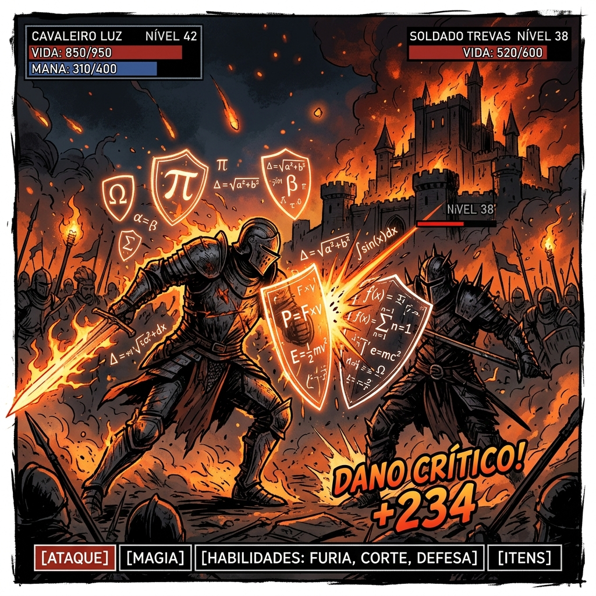

Capítulo 4
Monômios - A Base da Álgebra
4.1 Identificação e Grau
O monômio é a peça fundamental da álgebra. Ele é formado por um número (coeficiente) grudado em letras (parte literal). Não há sinais de + ou - separando as partes de um único monômio.
Na Prática:
Um monômio é como uma "moeda" de um jogo. O número 3 (coeficiente) diz a quantidade de moedas, e o "x²" (parte literal) diz de qual tipo ela é. Então 3x² são 3 moedas do tipo x².
O grau do monômio é a soma dos expoentes das letras. Se a letra não tem expoente visível, ele vale 1.
Exemplo: 5x²y³ tem grau 5 (2+3).
Quiz de Fixação (4.1)
1. No monômio -8m³n², a parte literal é:
2. Qual o grau de 7x²y⁴z?
3. São monômios semelhantes aqueles que têm:
4. O coeficiente do monômio -x² é:
5. O monômio 10 (apenas o número) tem grau:
4.2 Operações com Monômios
Assim como os números normais, podemos fazer as 4 operações básicas com os monômios, mas existem regras estritas sobre como lidar com as letras.
1. Adição e Subtração:
A regra de ouro aqui é: só podemos somar ou subtrair monômios se eles forem idênticos na parte literal. Eles precisam ser "semelhantes".
Na Prática: Pense nas letras como frutas no supermercado. Se você pegar 3 maçãs (3x) e depois colocar mais 4 maçãs (4x) no carrinho, você tem 7 maçãs (7x). A conta é simples: 3x + 4x = 7x.
Mas, e se você tentar somar 3 maçãs (3x) com 2 bananas (2y)? O resultado não é uma "maçanana". O resultado é apenas uma cesta com 3 maçãs e 2 bananas (3x + 2y). Elas não se misturam!
2. Multiplicação:
Aqui é terra sem lei! Você pode multiplicar qualquer monômio por qualquer monômio. A regra é: número multiplica número, letra multiplica letra igual. Na hora de multiplicar as letras iguais, você soma os expoentes.
Na Prática: Imagine que você comprou 2 pacotes de figurinhas (2x²). Cada pacote vem com 3 cartas super raras (3x⁴). Qual é o seu total de poder? Você multiplica as quantidades normais: 2 × 3 = 6. E soma a "força" mágica das letras: x² × x⁴ = x⁶. Resultado: 6x⁶.
3. Divisão:
A divisão é o inverso exato da multiplicação. Você divide os números e subtrai os expoentes das letras que forem iguais.
Na Prática: Imagine que você tem um prêmio total de 20x⁵ moedas virtuais e precisa dividir igualmente entre 4x² jogadores do seu time. Divida o montante: 20 ÷ 4 = 5. Subtraia os "impostos" das letras: x⁵ ÷ x² = x³. Cada jogador leva 5x³.
Quiz de Fixação (4.2)
1. 5ab + 3ab resulta em:
2. (-4x³) × (2x²) é:
3. 15a⁴b³ ÷ 3a²b resulta em:
4. Qual o resultado de 10x - 4x + x?
5. O produto de 3x × 2y é:
Avaliação de Aprendizagem: Capítulo 4
Nível Intermediário
1. Qual o grau do monômio 4x²yz³?
2. Resultado de 12x²y - 5x²y:
3. Produto de (3ab) × (5a²b):
4. Quociente de 20x⁶ ÷ 4x²:
5. Monômio semelhante a 2xy²:
Nível Avançado (Contexto Real)
6. (Piscina) O volume de água de uma piscina retangular pode ser representado pelo monômio V = 3x²y m³, onde x é a largura e y é a profundidade. Se a piscina do condomínio tem x = 4 metros de largura e y = 2 metros de profundidade, qual o volume total de água?
7. (Fazenda) Um agricultor calcula a produção total de uma lavoura pela expressão (2x)³ × (x²) quilos, onde x representa o número de hectares produtivos. Simplifique essa expressão.
8. (Engenharia) Um engenheiro está projetando um piso quadrado para uma praça. Cada lado do quadrado mede 3x metros. A expressão que representa a área total do piso é:
9. (Fábrica de Doces) Uma fábrica produz 10x⁵y² unidades de doces por dia e distribui igualmente entre 2x²y lojas parceiras. Quantos doces cada loja recebe por dia?
10. (Farmácia) A dosagem de um medicamento infantil (em mL) é calculada pela fórmula 5x³, onde x é um fator baseado no peso da criança. Se para uma criança específica o fator é x = 2, quantos mililitros de medicamento devem ser administrados?
Capítulo 5
Polinômios - Organizando Termos
5.1 Definição e Grau de um Polinômio
Se você entendeu o monômio como um bloco de montar individual (como um Lego), o polinômio é a estrutura inteira construída ao juntar vários desses blocos. Em termos matemáticos, um polinômio é uma cadeia formada pela adição (+) ou subtração (-) de vários monômios diferentes que não podem ser somados entre si.
Eles ganham apelidos charmosos dependendo do tamanho:
- Binômio: Formado por 2 termos (ex: 2x + 3y).
- Trinômio: Formado por 3 termos (ex: x² + 5x + 6).
- De 4 termos em diante, chamamos apenas de polinômio genérico.
Na Prática:
Pense num jogo de cartas colecionáveis (como Pokémon ou Yu-Gi-Oh!). Uma carta sozinha é um monômio. O seu baralho inteiro, que mistura cartas de ataque, defesa e magias diferentes, é o seu polinômio. É um conjunto organizado de vários elementos distintos.
Grau do Polinômio
Para descobrir o grau de um polinômio inteiro, basta olhar para todos os monômios que formam ele e escolher o "campeão". O monômio com o maior expoente define o grau do polinômio inteiro.
Exemplo: No polinômio 4x⁵ - 2x³ + 8x - 1, temos quatro cartas. A primeira tem poder 5. O grau desse polinômio é 5, porque 4x⁵ é a carta mais forte!
Quiz de Fixação (5.1)
1. O polinômio 3x⁴ - x² + 5x - 7 tem grau:
2. Como chamamos um polinômio com exatamente dois termos?
3. Qual o grau de xy + x + y?
4. No polinômio 2x² - 5x + 3, qual o termo independente (sem letra)?
5. O polinômio 0x² + 3x + 1 é de qual grau real?
5.2 Adição, Subtração e Multiplicação
1. Adição e Subtração
O segredo aqui é agrupar "o que é igual com o que é igual". Você vai alinhar os polinômios e somar apenas os termos que têm a mesma parte literal. Atenção à subtração: o sinal de "menos" na frente de um parêntese inverte o sinal de todo mundo lá dentro!
Na Prática: Imagine que você e seu amigo juntaram suas caixas de brinquedos. Sua caixa: (3 carrinhos + 2 bolas). Caixa dele: (5 carrinhos - 1 bola perdida). Quando vocês juntam tudo, vocês não misturam carros com bolas. (3x² + 2x) + (5x² - x) = 8x² + x. Cada um no seu quadrado!
2. Multiplicação (A Propriedade Distributiva)
Para multiplicar um termo por um polinômio inteiro (dentro de parênteses), você deve multiplicar o termo de fora por TODOS os termos lá de dentro. Nós chamamos isso carinhosamente de "Chuveirinho".
Na Prática: Imagine o "Chuveirinho" como um garçom muito educado servindo champanhe em uma festa. A mesa 1 tem 3 convidados: (x² + 2x + 5). O garçom é o termo de fora: 3x. Ele enche a taça de todos:
- Convidado 1: 3x × x² = 3x³.
- Convidado 2: 3x × 2x = 6x².
- Convidado 3: 3x × 5 = 15x.
Resultado: 3x³ + 6x² + 15x.
Quiz de Fixação (5.2)
1. (4x² - 3x) - (x² + 2x) resulta em:
2. O produto de (x + 4)(x + 1) é:
3. 3x × (2x² - 5) resulta em:
4. Somando x² + x com 2x² - 3x, temos:
5. A área de um retângulo de lados x e (x+5) é:
5.3 Divisão de Polinômios
1. Dividindo um Polinômio por um único Monômio
Você pega o divisor e o aplica a cada um dos membros do polinômio de cima, separadamente.
Na Prática: Rache a conta de R$ 40 em hambúrgueres (40x³) + R$ 20 em refrigerantes (20x²) com 4 pessoas (4x). Hambúrguer: 40x³ / 4x = 10x². Refrigerante: 20x² / 4x = 5x. Cada um paga 10x² + 5x.
2. Dividindo Polinômio por Polinômio (O Método da Chave)
O processo segue um ciclo infinito até o resto zerar: Divide, Multiplica, Troca o Sinal e Soma.
Na Prática: Pense no método da chave como um duelo de espadas em um RPG. Você ataca o Líder inimigo (termo de maior grau) com o Seu Líder. Ao cortá-lo, você lida com os capangas (o resto) e avança para a próxima fileira até não sobrar ninguém (resto zero).

Quiz de Fixação (5.3)
1. (4x³ + 8x²) ÷ 2x resulta em:
2. Na divisão (x² - 4) ÷ (x - 2), o primeiro passo é dividir:
3. O quociente de (x² - 5x + 6) ÷ (x - 2) é:
4. Se o resto de uma divisão de polinômios é zero, dizemos que a divisão é:
5. Ao dividir 10x⁴ por 2x², o resultado é:
Avaliação de Aprendizagem: Capítulo 5
Nível Intermediário
1. Qual o grau de x⁵ - 2x² + 10?
2. Reduza: (3x+2) + (2x-5):
3. Produto (x+2)(x-3):
4. Divisão (6x² - 4x) ÷ 2x:
5. Trinômio tem quantos termos?
Nível Avançado (Contexto Real)
6. (Terreno) A área de um terreno retangular é representada pelo polinômio x² - 9 metros quadrados. O proprietário descobriu que um dos lados mede (x + 3) metros. Usando a divisão de polinômios, qual é a medida do outro lado?
7. (Construção de Deck) Um arquiteto quer construir um deck de madeira com formato retangular. Se a largura do deck é um binômio de grau 2 (como x² + 1) e o comprimento é um monômio de grau 1 (como 3x), qual será o grau do polinômio que representa a área total do deck?
8. (Lucro de Empresa) O lucro mensal é modelado por P(x) = x² - 5x + 6 (em milhares), onde x é o número de meses. No 3º mês (x = 3), qual foi o lucro?
9. (Controle de Qualidade) A máquina verifica peças por Q(x) = x² + 1. Ao dividir por (x - 1), o engenheiro encontra um resto diferente de zero. Qual é o valor desse resto?
10. (Embalagem) Uma caixa tem dimensões (x² + 1) e (x² + 1). O polinômio resultante da multiplicação, (x²+1)², terá grau:
Capítulo 6
Produtos Notáveis - Atalhos Matemáticos
6.1 Os 4 Produtos Básicos
Muitas multiplicações aparecem tanto que criamos "atalhos" para não precisar fazer o chuveirinho toda hora.
1. Quadrado da Soma
Quadrado do 1º + 2x o 1º pelo 2º + Quadrado do 2º.
2. Quadrado da Diferença
Apenas o sinal do meio muda para menos.
3. Produto da Soma pela Diferença
O mais rápido: Quadrado do 1º menos Quadrado do 2º.
4. Produto de Stevin
Termo do meio é a SOMA, último é o PRODUTO.
Na Prática:
Usar o Produto Notável é como ter um "Fast Pass" na Disney. Enquanto todo mundo está na fila fazendo o chuveirinho demorado termo por termo, você usa a fórmula e pula direto para o resultado final em 2 segundos.
Quiz de Fixação (6.1)
1. (x+5)² resulta em:
2. (y+4)(y-4) resulta em:
3. (x+2)(x+3) pelo Produto de Stevin é:
4. (2a-3)² resulta em:
5. O termo central de (x+10)² é:
6.2 Produtos Avançados (Cubos e Fatoração)
Aqui lidamos com a 3ª potência (cubo) e a decomposição de termos.
5. Cubo da Soma
6. Cubo da Diferença
7. Soma de Cubos
8. Diferença de Cubos
Na Prática:
A fatoração (itens 7 e 8) é como o botão "Desfazer" (Ctrl+Z). Você tem o resultado final (a³ - b³) e quer desmembrá-lo para ver quais peças originais o formaram. Isso ajuda muito a simplificar frações cabeludas depois!
Quiz de Fixação (6.2)
1. (x+2)³ começa com x³ e termina com:
2. No cubo da diferença, os sinais são:
3. x³ - 27 faturado começa com:
4. A fórmula (a-b)(a² + ab + b²) resulta em:
5. O termo do meio de a³+b³ faturado é -ab. O erro comum é colocar:
Avaliação de Aprendizagem: Capítulo 6
Nível Intermediário
1. Desenvolva (x+3)²:
2. Desenvolva (x-5)²:
3. Resultado de (x+2)(x-2):
4. Trinômio de Stevin para (x+1)(x+4):
5. Quadrado de (2x+1)²:
Nível Avançado (Contexto Real)
6. (Cubo Mágico) Um cubo mágico especial tem aresta (x+1) cm. Para o volume desenvolva (x+1)³. Qual o polinômio resultante?
7. (Terreno Cercado) Área útil é (x+10)(x-10). Usando produtos notáveis, a expressão simplificada é:
8. (Reservatório Industrial) Fatorar a expressão x³ + 8 usando soma de cubos:
9. (Cálculo Mental) (100+1)² = 100² + 2×100×1 + 1² resulta em:
10. (Investimento) Sabendo que a+b=5 e ab=6, qual é o valor de a² + b² (lembrando que (a+b)² = a² + 2ab + b²)?